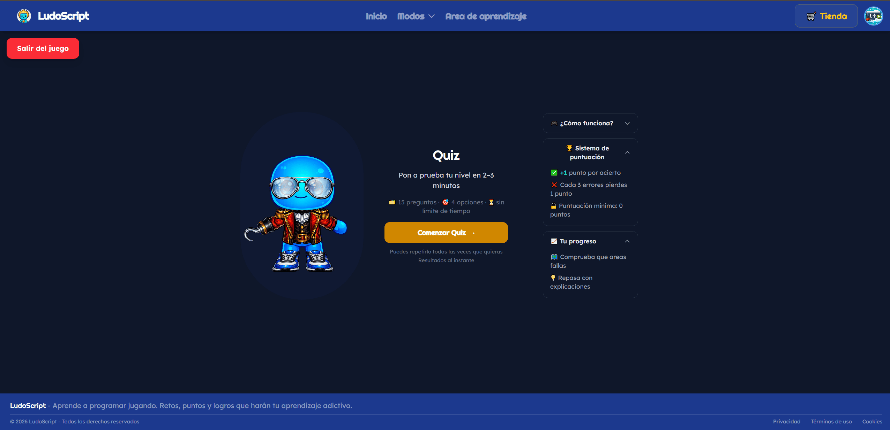
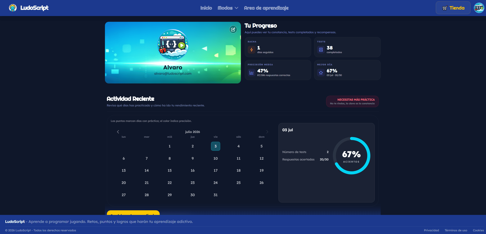

Jerarquía y flujo visual.
Diseño interfaces donde el usuario nunca tenga que adivinar el siguiente paso. Elimino el ruido visual para priorizar la claridad y la conversión.
- prototipado rápido
- criterio ux
Diseño y desarrollo aplicaciones web conectando código, estrategia de marketing e inteligencia artificial. ¿El resultado? Interfaces intuitivas, automatizaciones que ahorran tiempo y productos que la gente realmente quiere usar.
perfil
Vengo del marketing y, antes de escribir la primera línea de código, pienso en el usuario final. No me conformo con que una función se ejecute, busco que el flujo se entienda, aporte valor y responda a un objetivo de negocio.
Como desarrollador Full-Stack, construyo tanto la lógica sólida del backend como interfaces fluidas en el frontend. Utilizo la IA de forma estratégica para acelerar el desarrollo y automatizar tareas repetitivas, lo que me permite centrarme en lo que de verdad importa: transformar ideas en software funcional y rentable.
qué aporto
Diseño interfaces donde el usuario nunca tenga que adivinar el siguiente paso. Elimino el ruido visual para priorizar la claridad y la conversión.
Construyo aplicaciones con JavaScript, Vue, Node, Express y bases de datos, usando la IA como apoyo para programar. Producto ordenado, mantenible y listo para crecer.
Diseño scripts y conecto APIs de LLMs para optimizar flujos de trabajo, eliminar tareas repetitivas y automatizar procesos sin perder el control del entorno técnico.
proyectos
Cada proyecto explica el problema, las decisiones técnicas y lo que aprendí por el camino.


educación · ia
Plataforma educativa full-stack que utiliza IA para detectar y reforzar las áreas débiles de aprendizaje de cada usuario y potenciar sus fortalezas mediante contenido dinámico. Diseñé la arquitectura del backend, la integración con la API de Gemini y la comunicación en tiempo real con Socket.io.
Leer el caso de estudioHe trabajado la gestión del contexto de los LLMs y he creado un mapa del proyecto para que la IA se oriente mejor en el código.
Las instrucciones deben ser claras y precisas. No siempre gana el modelo más caro: también influye el harness que lo acompaña.
automatización · producto
Trabajo práctico con skills, agentes y gestión del contexto de los LLMs para agilizar el rendimiento del agente en tareas de desarrollo.
contacto
Busco incorporarme a equipos que compartan esta visión híbrida entre desarrollo técnico, agilidad con IA y foco en el usuario. Si crees que encajo en tu proyecto, hablemos.
o directamente: alvpastor17@gmail.com